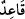
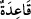
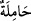
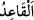

bilendir.
“Bir nikâh ümidi beslemeyen,” yâni yaşlılıkları sebebiyle nikâhlanmayı arzu etmeyen
“çocuktan” yâni hayız ve gebelikten “kesilmiş yaşlı kadınların,…” Evlerinde
oturanların ve evde kalmış olanların Bu kadınlarda hayız ve gebelikten kesilmiş
olmanın yanında bir de yaşlılık dikkate alınmıştır. Çünkü bir kadın hayızdan kesildiği
halde ona rağbet devam edebilir. “Evlenme ümitleri olmayanlar,” yâni yaşlı ve ihtiyar
olduklarından birisinin kendilerini nikâhlamalarını ummayan kadınlar, demektir.
“Ziynetleri” yabancı erkeklere “teşhir etmeksizin” yâni bilezik, halhal, gerdanlık
gibi gizli ziynetleri ızhâr etmedikleri halde “(bazı) elbiselerini” yâni normal elbiseler
üzerine giyilen cilbâb ve izar gibi dış elbiselerini, başörtüsü üzerine taktıkları peçeleri
erkeklerin yanında “çıkarmalarında kendilerine bir vebal” günah “yoktur.” Onların
işlerini hafifletmek gayesiyle, dış elbiselerini çıkarmalarına cevâz verilmiştir.
“, “ kelimesinin çoğuludur. Bu kelime kadınlara mahsus olduğu için
sonunda hâ harfi yoktur. Oturmak mânâsına kullanıldığında ise “ denir. Tıpkı
karnında yükü/bebeği olan kadına “, sırtında yük olana “ denildiği gibi. el-
Kâmûs’ta “ çocuktan, hayızdan ve kocadan kesilmiş kadın demektir.” der.
“ ün asıl anlamı, gizli olan şeyi açığa çıkarmada zorlama demektir. Burada
ün asıl anlamı, gizli olan şeyi açığa çıkarmada zorlama demektir. Burada
kadınların ziynetlerini ve güzelliklerini açarak erkeklere göstermeleri anlamına has
kılınmıştır.
Yine de dış elbiselerini çıkarmayı terk etmek sûretiyle “iffetli davranmaları” iffetli
olmayı istemeleri “kendileri için” töhmetten uzak olduğundan elbiselerini çıkarmaktan
“daha hayırlıdır.”
İffet, nefiste insanın sayesinde şehvetin galebesinden korunduğu bir hâlin meydana
gelmesidir.
“Allah işitendir,” işitilen her şeyi son derece iyi işitendir, dolayısıyla o kadınlarla
erkekler arasında cereyan eden konuşmaları da işitir. “Bilendir.” Onların maksadlarını
da bilir.
Burada bir korkutma olduğu âşikârdır.
Bilesin ki ihtiyar kadın, iştah duyulmayacak bir durumda olursa şehvetten emin
olunduğu için ona bakmak câizdir. Burada işâret vardır ki işler fitne alanından çıkar,
âfet ateşleri sâkinleşirse iş kolaylaşır, zorluk kalkar ve ruhsatlar mübah kılınır. Fakat
“iffetli olmak istemeleri, onlar için daha hayırlıdır.” âyetinin de işâret ettiği gibi
takvâ, fetvâdan daha üstündür. Hadiste de “Kul, günaha düşmekten sakınarak günah
olmayan şeyleri terk etmediği sürece müttakîlerden olamaz.”[184] buyrulmuştur.
İbni Sîrîn der ki: Ne uyanıklık ne de uyku hâlinde Abdullah’ın anası dışında hiçbir
kadına sarılmadım. Rüyâda kadın görür, onun bana helâl olmadığını bilir ve gözümü
ondan çeviririm.” Birisi de: “Keşke benim uyanıklık hâlindeki aklım, İbn Sîrîn’in
uykudaki aklı gibi olsa.” diye temenni etmiştir.
el-Fütûhâtü’l-Mekkiyye’de der ki: “Takvâ sâhibi kimsenin, dış yönüyle haramlardan